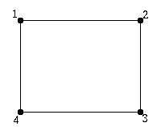
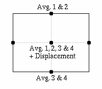
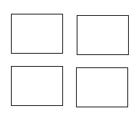
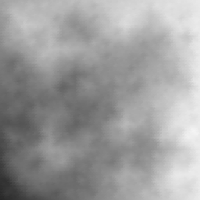
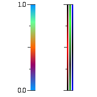

Plasma FractalYou can download the applet here You can also view the source for this applet | |
The AlgorithmThe above Java applet draws something known as a plasma fractal. Clicking the applet will generate a new, random fractal. Go wild!!! It will take a few seconds though, so don't click while it's generating the fractal.There are two common methods for generating such images. One of them is known as tie-dye. Unfortunately, that particular technique went out with the sixties, and I don't know exactly how its done (except for a few details about tying up a shirt and subsequently dying it). The second technique is a recursive algorithm known as random midpoint displacement. I think we can safely say that recursive algorithms will never go out of style! At the very least, I know a bit more about them than I do about sixties fashion (or any fashion, for that matter). The algorithm begins with a rectangular grid that has four points, one at each corner. These corners are each randomly assigned a color value. Now, five new points are added to the grid. One point is added to each edge that has a color value in-between the color value of the two corners connected to the edge (i.e., it is the average value of those two corners). The fifth point is placed in the center, or midpoint, of the grid. It is the average of the original four corners. This is where the algorithm gets its name. The midpoint is randomly displaced. That is to say, some random value is chosen, and the color value is shifted by the value. The range of possible random numbers is made to be proportional to the size of the square. A large square may have its midpoint displaced a great deal, and a small square can not have its midpoint displaced by more than a little bit. More rigorous implementations of the algorithm actually use fancy applications of Gaussian statistics to set the range of random values. Unfortunately, I know even less about Gaussian statistics than I know about tie-dye, so I found that fudging it was fine for producing pretty pictures. If you are interested though, you may want to look for references with more careful descriptions of the algorithm. If you were reading carefully, you may have noticed that adding the five extra points divided the original rectangle into four similar rectangles of one fourth the area! The algorithm is repeated for each of these new squares, yielding a total of sixteen squares! The process can be repeated recursively as necessary. In this case, it is repeated until each rectangle is less than the size of a single pixel. At that point, the recursion ends, and the square is drawn. While there is no question that this is an exceedingly cool algorithm (you just can't get enough of those, right?), a great deal of the magic actually has to do with the selection of colors. In this applet, every color value is a number of type float from zero to one. What the algorithm does is create a field of smoothly changing color values. A function converts these color values to colors so that the color values from zero to one flow smoothly between colors, creating the plasma effect. Believe it or not, random midpoint displacement is quite useful in some situations. It's ideal for generating terrains. Imagine that, instead of a color value, a height value is used instead. This can create very realistic looking, randomly generated mountains or hills, a technique that is used quite often and with great success in Hollywood. Also, by carefully mapping certain colors to different color values, useful textures and images can be generated. I can't claim that I am actually aware of an example of this, but somebody must have done it! This image is an example of terrain generated with random midpoint displacement. The algorithm was used to select the color values, and those color values were also used as height values. Notes on the Source CodeIf you are interested in trying to implement this technique yourself, I highly recommend it. It's a fantastic exercise in recursion, and a sure-fire way to impress women. Trust me; it can't miss! I have provided the source code for those who want to look at it for some help or those who just wish to see the specifics of my implementation.While one of the rectangular grid-pieces is being divided into four similar rectangles, the color values for its four corners are named c1, c2, c3, and c4. The variable c1 is the color value for the top-left hand corner, and the three other variables proceed clockwise around the rectangle. The variables Edge1, Edge2, Edge3, and Edge4 hold the color values for the four new points that are created on the edges. Edge1 stores the color value for the point created on the top edge, and the other three edge variables also proceed clockwise around the rectangle. Finally, the variable Middle refers to exactly what you would guess -- the midpoint. Hopefully those notes will help make the program clearer. Most other important information should be in the comments. ReferencesNote that the implementation of the algorithm described here is the result of some tweaking on my part to make it quick to implement (while making the prettiest pictures) and is by no means rigorous. These sources, which I used, and others may help you understand the technique better.Hahn, Patrick. (1997). Plasma Fractals. Retrieved January 30, 2002 from http://www2.vo.lu/homepages/phahn/fractals/plasma.htm. Marak, Ivo. Random Midpoint Displacement Method. Retrieved January 30, 2002 from http://www.cg.tuwien.ac.at/studentwork/CESCG97/marak/node3.html Justin Seyster (2002) You can reach me by way of my GitHub profile. |
Step 1 Start with a rectangular grid that has four points, each with a color value.Step 2 Create a new point at each of the edges with its color value averaged from the two adjacent corners. Create a midpoint with its color value averaged from all four corners and randomly "displaced."Step 3 Rinse. Repeat.Color Values This plasma fractal has been colored to show you what color value each pixel was assigned. All black means a color value of 0.0 and all white is a color value of 1.0 The handy chart on the left illustrates how each color value is converted to a color. The chart to the right shows all the colors from the first chart broken into their red, green and blue components. |